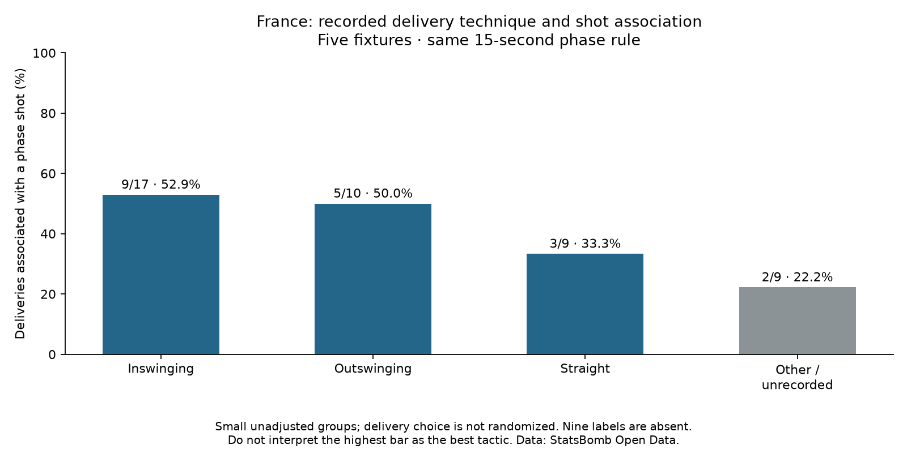

Football analyst training · Phase 2 · Lesson 39
Add a tactical category.
Inswinging deliveries curl toward goal; outswinging deliveries curl away. We use the recorded technique labels, keeping the same phase rule and delivery sample.
Completed assignment
- Inswinging: 9/17 deliveries associated with a shot, 52.9%.
- Outswinging: 5/10, 50.0%.
- Straight: 3/9, 33.3%.
- Unrecorded technique: 2/9, 22.2%.

What this does and does not show
These are small, unadjusted groups. Takers, opponents and situations may differ. Those differences can influence both delivery choice and outcome: this is the problem of confounding.
Nine of 45 technique labels are absent. Unknown does not mean Straight or short corner. We keep those deliveries visible instead of guessing.
Analyst wording
“Inswinging deliveries were associated with a shot in 9/17 cases, versus 5/10 for outswinging. Small groups, missing technique labels and different match contexts limit any tactical recommendation.”
Run 39_corner_delivery_profiles.py in Spyder. It adds a reporting category; it does not fit or change the xG model. The worked assignment is complete with assistance. Ask for more detail on any new concept.